مرآة الحقيقة News
An original Arabic-language digital news and media platform — Web and Mobile — designed and branded from scratch, covering local Jordanian, regional Arab, and international coverage with live streaming, category feeds, and live data widgets.
Project Overview
مرآة الحقيقة ("Mirror of Truth") News is a fully original concept — the name, logo, color identity, and content structure were designed for this project rather than modeled on any existing outlet. The platform gives Arabic-speaking readers a consistent experience across a responsive Web application and a companion Mobile application, spanning breaking news, live broadcasts, and category-specific coverage.
Target Users
Arabic-speaking readers across Jordan and the wider Arab world, from mobile-first younger users to desktop-first older users who prefer denser, sidebar-rich browsing.
Coverage
World, Local, Economy, Sports, Technology, and Culture — plus a dedicated live-streaming news channel.
Main System Features
| Feature | Description |
|---|---|
| Home Feed & Categories | Personalized headlines, breaking news, and category shortcuts (World, Local, Economy, Sports, Technology, Culture) |
| Live Streaming | Dedicated Live section streaming a news channel in real time with a "LIVE" badge and viewer count |
| Search | Full-text search for articles by keyword or topic from any screen |
| Article Detail | Headline image, body text, view count, and time of publish for context |
| Authentication | Email/password login, Google/Apple/Facebook sign-in, registration, and forgot/reset-password flow |
| Bookmarks | Save articles to read later; manage or delete saved items individually |
| Profile & Settings | Edit personal info, switch interface language (Arabic/English), manage privacy and security, log out |
| Live Data Widgets | Stock-price ticker in Economy; live match scores and a top-scorer's table in Sports |
Interface Design
Both platforms share the same logo, color palette, and iconography for brand consistency, but each uses an interface style suited to its device rather than a simple scaled copy of the other.
desktop_windowsWeb
Wide multi-column layout with solid, opaque panels: a top navigation bar with horizontal category tabs, a main content column, and side panels for tickers and "most read" lists.
smartphoneMobile
Built from glassmorphic widgets — translucent, frosted-glass cards throughout the home feed, category tiles, profile, and saved articles — with a fixed bottom tab bar for one-handed navigation.
HCI Principles Applied
| Principle | Applied Example |
|---|---|
| User Control & Freedom | Cancel out of social-login confirmations; delete individual saved articles; log out anytime from Settings |
| Recognition Over Recall | Search, notifications, bookmarks, and social-login use universally recognized icons |
| Accessibility | Full right-to-left layout for Arabic; high-contrast text; generously sized touch targets |
| Visibility of System Status | Red "LIVE" badge with viewer count; selected category and active tab change color to confirm state |
| Feedback | Highlighted active category tab; social-login confirmation card before completing sign-in |
| Simplicity | Two-field login form; category screen uses icon-and-label chips instead of dropdown menus |
| Error Prevention | Re-enter password fields on registration and reset-password screens |
| Consistency | Same logo, indigo header, "LIVE" badge, and article-card layout reused across every category and platform |
| Easy Navigation | Persistent top nav (Web) / bottom tab bar (Mobile); dedicated Back control on every sub-screen |
| Aesthetic & Minimalist Design | Restrained indigo/navy/red palette; generous spacing around images and headlines |
Web Interface Screenshots
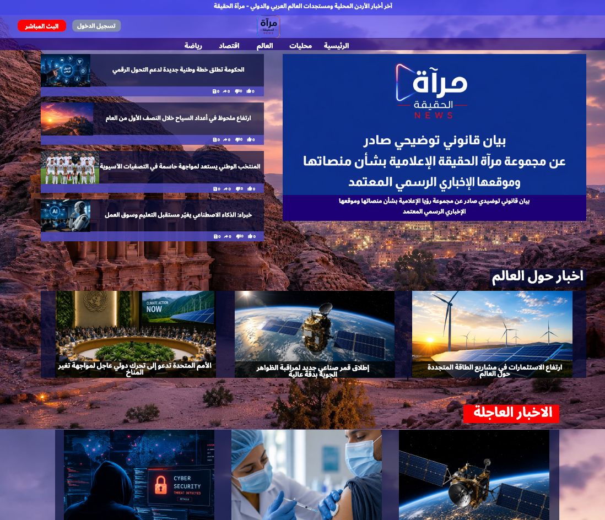
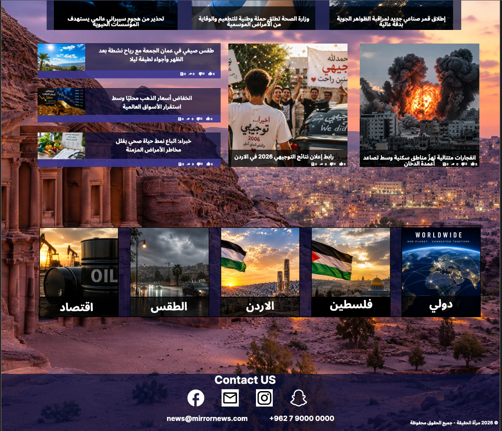
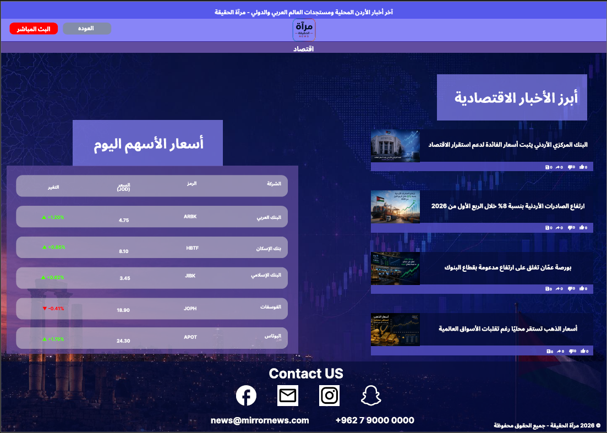
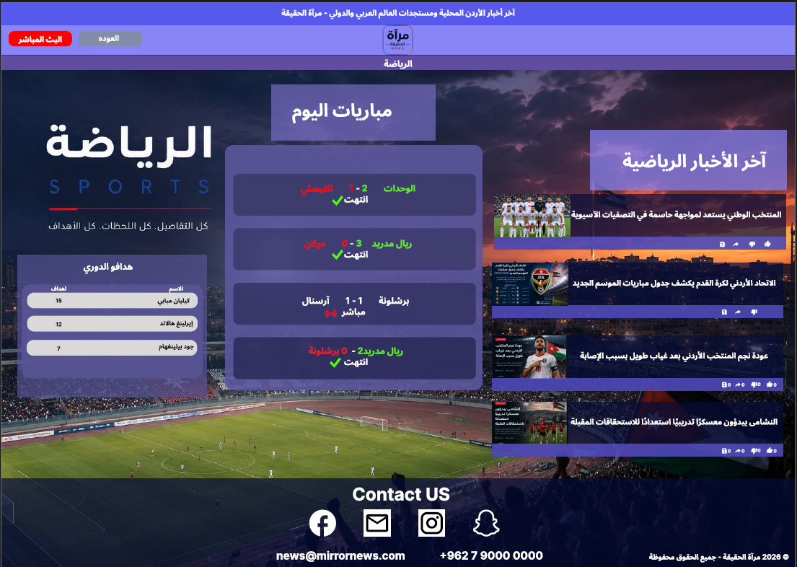
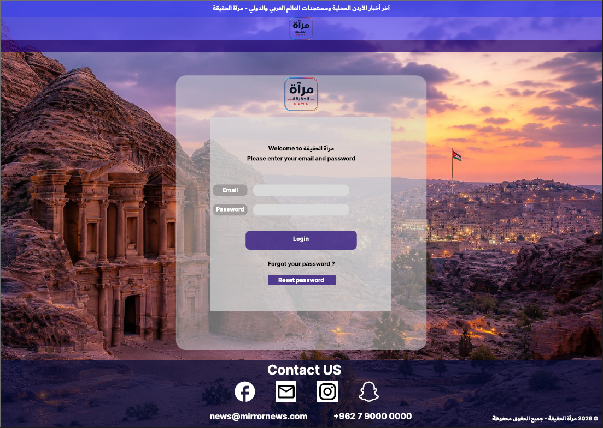
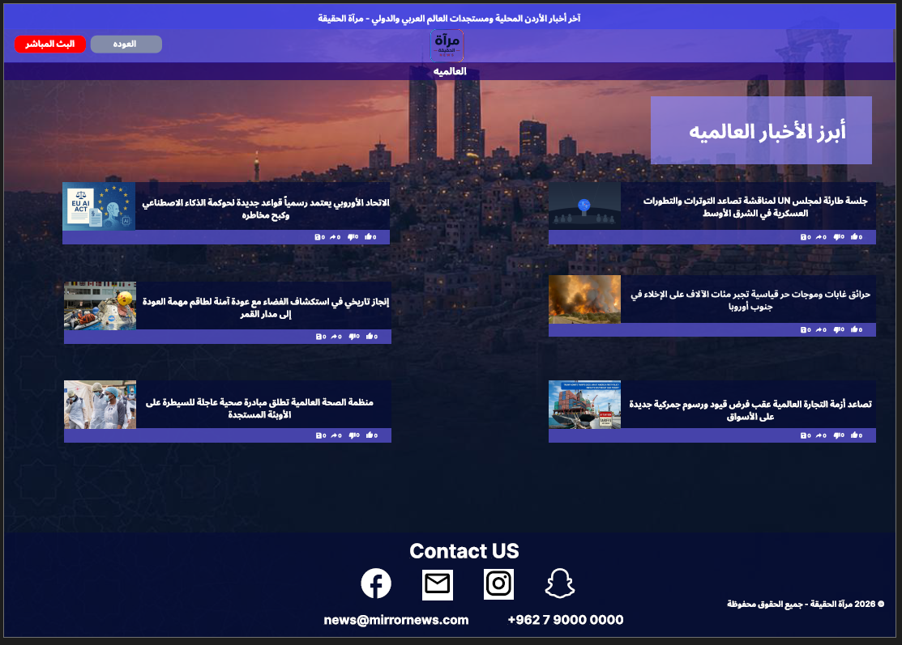
Mobile Interface Screenshots
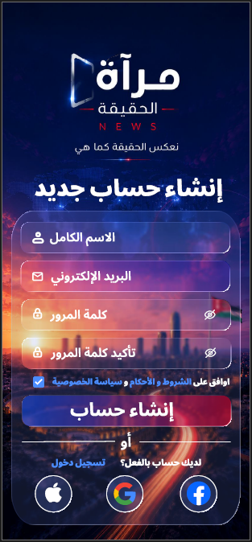
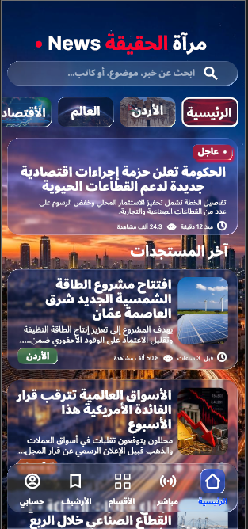
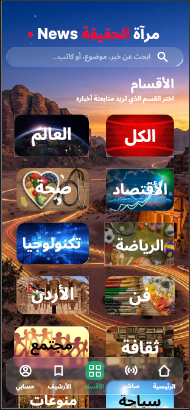
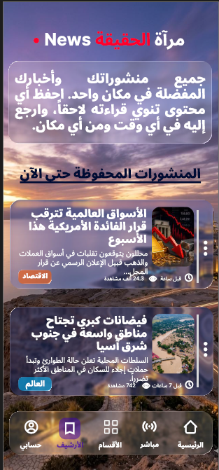
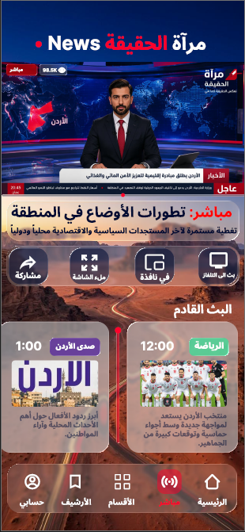
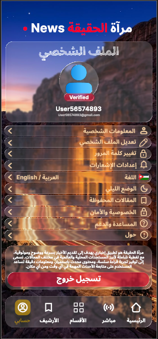
Tools Used
Final Project · Human-Computer Interaction — 13326
Princess Sumaya University for Technology